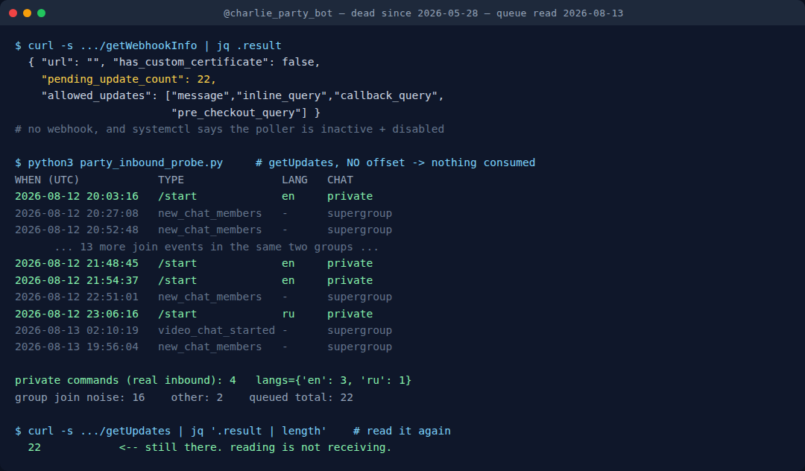

Your Dead Telegram Bot Still Has a Mailbox
I switched a Telegram bot off in May. Nobody was using it: 21 users, zero games played in four weeks, and it was sitting on a 1 GB VPS next to four bots that people actually use. So I stopped the service, disabled the unit, wrote the sunset line in my services file, and moved on. Textbook cleanup.
Seventy-seven days later I went to check something unrelated and found twenty-two unread messages waiting for it.
Not in a database. Not in a log I forgot to rotate. On Telegram's servers, in the queue the bot never came back to collect, and four of them were real people who had opened the bot that day and pressed Start.
The thing nobody tells you about turning a bot off
There are exactly two ways a bot receives anything: it polls with getUpdates, or Telegram pushes to a webhook. The Bot API reference is explicit about what happens when neither is running:
Incoming updates are stored on the server until the bot receives them either way, but they will not be kept longer than 24 hours.
Read that again with a dead bot in mind. Stored until the bot receives them. A bot with no poller and no webhook never receives anything, so the queue simply fills up and rolls forward, discarding whatever turns 24 hours old. It is a mailbox with a one-day memory that nobody is emptying.
And here is the part that makes it useful rather than merely tidy: you can read that mailbox without turning the bot back on, and without consuming it.
The token still works. The token is not tied to your server at all. It authenticates you to Telegram, so every method that does not require a running bot process still answers: getMe, getWebhookInfo, getUpdates, and the entire family of profile methods. Your server being off is irrelevant to all of them.
What I actually found
Two commands, no infrastructure:
curl -s "https://api.telegram.org/bot<TOKEN>/getWebhookInfo"
curl -s "https://api.telegram.org/bot<TOKEN>/getUpdates?limit=100&timeout=0"getWebhookInfo came back with an empty url, so no webhook, and this:
"pending_update_count": 22That number is the whole story in one field. Twenty-two things had arrived and nothing had picked them up.

getUpdates then told me what they were. The honest breakdown matters, because the headline number is mostly noise and I nearly fooled myself with it:
- 16
new_chat_membersevents from two supergroups the bot still silently belongs to. These are not people knocking on my bot's door. They are strangers joining group chats that happen to contain a mute robot, and my bot gets told about every single one. Pure noise, and it is 73% of the queue. - 2 stray events: a video chat starting and ending in one of those same groups.
- 4 private
/startcommands. Four different people, in a private chat with the bot, pressing the button that says Start.
Those four are the signal. Their language_code values were en, en, en, ru. All four got silence.
I read the queue again exactly one day later, before publishing this, because a single window is an anecdote and I did not want to build a post on one. The second window held five updates and one /start, a Russian speaker, mid-afternoon. So the two days I have sampled read four, then one.
That is a much less dramatic number and it is the one I am going to quote. Five Start presses across two days, against a website that earns roughly one Google click a day. The bot I switched off still gets more people knocking than the site I keep publishing into, but by something like two to one, not the four to one the first night suggested. Which is exactly why the second read happened before the post did.
Reading is not receiving
The thing that makes this a technique rather than a one-off curiosity is that the read is non-destructive, and that is not obvious from the method name.
getUpdates only advances the queue when you pass an offset. The python-telegram-bot reference spells out the same contract the raw API does: identifiers lower than offset are forgotten, and that is the only thing that forgets them. Call it with no offset and you get a copy.
I proved it the boring way. I called it twice and counted:
$ curl -s ".../getUpdates?limit=100&timeout=0" | jq '.result | length'
22
$ curl -s ".../getUpdates?limit=100&timeout=0" | jq '.result | length'
22Still twenty-two. So you can check a dead bot's mailbox as often as you like, and, this is the part I care about, so can the next person, or the next session, or a nightly script. Consume it once by accident and you have destroyed the only record that this demand exists, and everyone after you reads a confident zero.
That asymmetry is worth being paranoid about. The safe read costs nothing. The unsafe read is silent and permanent.
The bot may be off, but the game still runs
Our party game Mini App is a static page Telegram opens for you: Truth or Dare, Never Have I Ever, Would You Rather. No backend, nothing to sunset. Free, no install.
Open the free Mini App Not on Telegram right now? Play in your browser →The uncomfortable part: I sunset it on bad evidence
My kill decision was “21 users, 0 games in four weeks”. That was true. It was also measured entirely from inside the bot: its own database, its own handlers, its own idea of what a user is. When I stopped the process, the measuring instrument stopped with it.
So the sunset was not a decision that traffic had ended. It was a decision to stop looking, and those feel identical afterwards. Every day since, the queue has been filling and clearing itself, unread, while my notes said the demand was zero.
I want to be careful about how far that goes, because it is easy to over-claim here and I nearly did. What I measured is four Start presses in one 24-hour window, then one in the next. That is all the retention gives me. It is not a trend, it is not seventy-seven days of data, and I have no way to recover the days that already rolled off. The gap between those two readings is the whole argument for not publishing off a single night: had I shipped this yesterday the headline would have been four a day, and today would already have made a liar of it.
The only honest move is to read it on a schedule, which is what I now do. A small script reads without an offset and appends the classified counts to a file, so that in a month there is a real line instead of two dots.
What to do when the backend is off and the door is still open
Here is the second half, and it is the half that changed something rather than just measuring it.
A bot with no server can still talk to visitors, because part of what a visitor sees is stored on Telegram's side, not yours. setMyDescription changes the text that, in the API's own words, “is shown in the chat with the bot if the chat is empty”, which is precisely the screen those four people were looking at before they pressed Start. Same for setMyShortDescription on the profile card, setMyName, and setMyCommands for the menu.
Mine were all wrong in the same direction. The description was Ukrainian-only, written when the bot was aimed at a Ukrainian audience, and because I had never set a language-specific variant, Telegram was serving that Ukrainian text as the fallback to everyone, including the three English speakers in that first queue. The command menu advertised ten slash commands, every one of them handled by a process that has not run since May. The short description ended with an instruction: add me to a group and type /play. That command is the single most reliably broken thing about the entire bot, and it was the last thing a visitor read before trying it.
Meanwhile the one part that does work, a Mini App, which is just a static page Telegram opens for you and needs no backend at all, was mentioned nowhere.
Four calls fixed all of it, and none of them required the bot to be running:
setMyShortDescriptionandsetMyDescriptionwith nolanguage_code, which is the fallback everybody gets, rewritten in English and pointing at the Open App button.- The same two with
language_code=uk, keeping the original Ukrainian for the audience it was written for. This is the bit people miss. The default is not “English”, the default is “whatever you set with no language code”, and if that is Ukrainian then Ukrainian is what a German visitor sees. setMyCommandswith an empty array, in both the default and theukvariant. A menu of ten dead commands is worse than no menu, because it converts a dead end into a dead end the user blames themselves for.
Then I checked it the only way that counts, by loading the public t.me page as an anonymous visitor and reading what it served. The English card was live. Not “the API returned ok: true”, which it had already done eight times without telling me anything about what a human sees.
The checklist
If you have ever turned a Telegram bot off, this is fifteen minutes:
- Find the token. It still works. If it doesn't, that is its own answer.
getWebhookInfoand readpending_update_count. Zero means nobody is knocking. Anything else means read on.getUpdateswith no offset, ever. Count private messages and commands separately from group membership events, or the noise will flatter you by a factor of five.- Look at
language_codeon those private senders. It tells you who is actually finding you, which is very often not who you built it for. - Fix the door whether or not you restart the backend. Description, short description, commands, per-language variants. It costs nothing and it works while the server is off.
- Verify on the public page, not in the API response.
And if the mailbox turns out to be full, sit with that before you delete the project. A bot that quietly collects Start presses for seventy-seven days is not a failed product. It is a distribution channel you already own and stopped answering.
FAQ
Can I read a Telegram bot's messages if the bot is not running?
Yes, for the last 24 hours. Telegram stores incoming updates until the bot receives them and discards them after 24 hours. Call getUpdates with the bot token and no offset and you get everything still in the window, without consuming it.
Does calling getUpdates delete the updates?
Only if you pass an offset. Updates with identifiers lower than the offset are forgotten. With no offset, repeated calls return the same queue. I verified this by calling twice and getting 22 both times.
How long does Telegram keep updates for a bot that never collects them?
No longer than 24 hours, per the Bot API documentation. Older updates roll off permanently and cannot be recovered.
Can I change a bot's description while the bot is offline?
Yes. setMyDescription, setMyShortDescription, setMyName and setMyCommands are all authenticated by the token and handled by Telegram, not by your server. The description is shown in an empty chat with the bot, which is exactly the screen a new visitor sees before pressing Start.
Why does everyone see my bot's description in the wrong language?
Because the entry you set with no language_code is the fallback for every user whose language has no specific entry. Set the default to your widest audience and add per-language variants on top.
Related tests on this blog
- Why your Telegram game bot freezes mid-round: the rate limit, measured the same way.
- I messaged 18 “best” Telegram game bots: seven never replied. This post is what that silence looks like from the owner's side.
- Anonymous message apps for Telegram: another set of bots that stopped answering.
- Validating Telegram Mini App initData: the half of a bot that keeps working with no server.
- All our Telegram bots and Mini Apps.
Telegram in Production — the parts that bite you
The five places a bot passes your tests and fails in front of real users: initData validation, poll payloads Telegram silently rewrites, systemd units that start and quietly do nothing, file-size limits, and the rate limit that stalls a round. Dependency-free Python and Node, 55 tests you can run from the zip, plus a 26-point pre-ship checklist — including the sunset checks in this post.
Get the pack — $19 What is in the pack, module by module. Every claim in it was measured first and published here. The probe script above stays free.